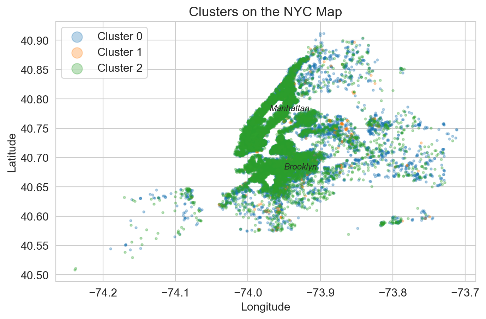
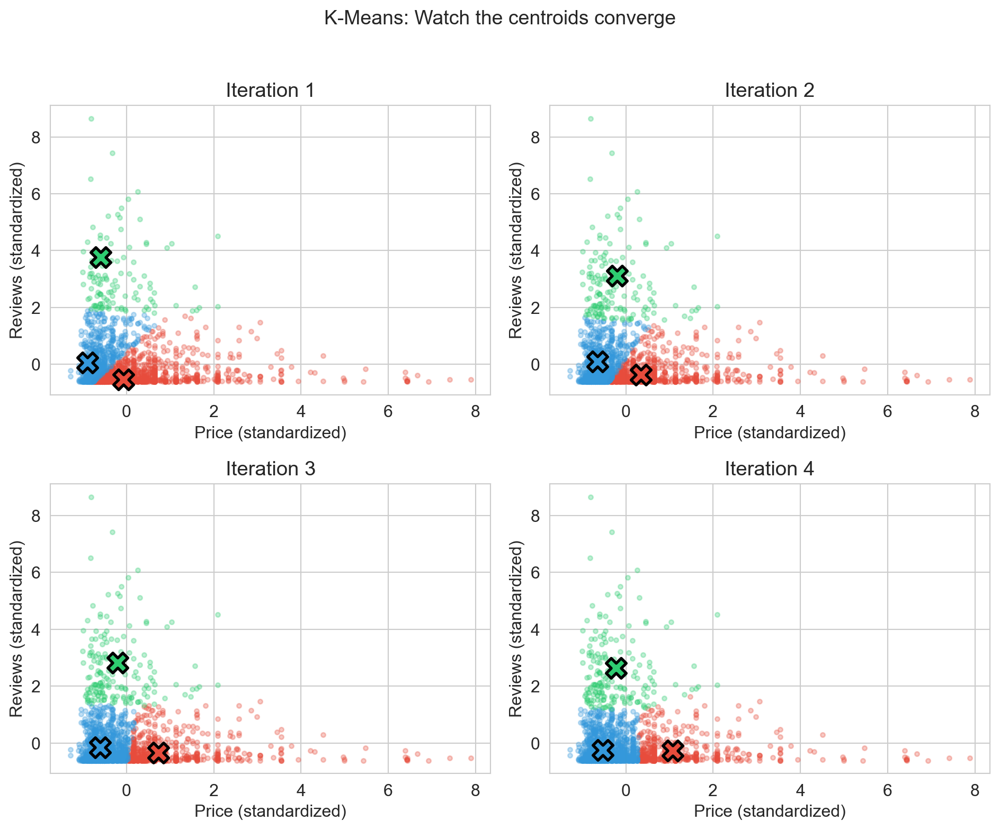
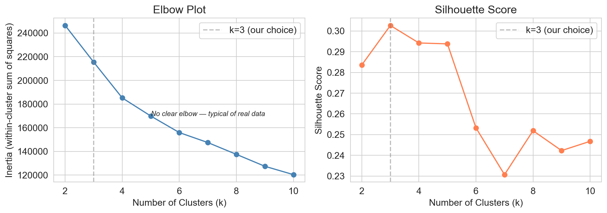
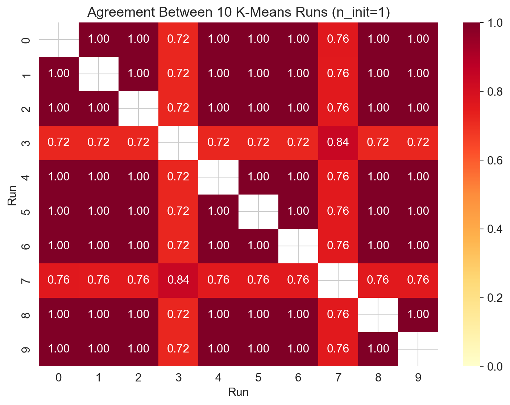
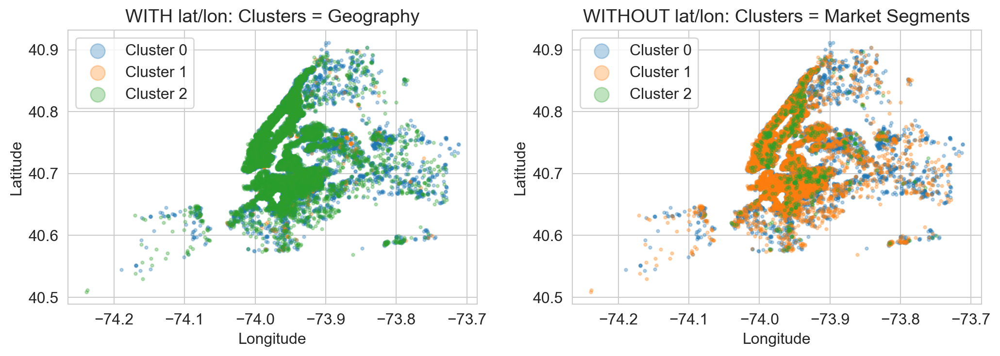

Lecture 15: Clustering — K-Means
MSE 125 — Applied Statistics
Monday, May 18, 2026
logistics
- HW 4 out today — Airbnb PCA + clustering + Kaggle challenge
- Quiz 7 Wednesday May 20 — PCA + clustering
- project midterm returned this week
the brief
Airbnb host, NYC
goal: figure out who you compete with so you can price against them
a cozy Brooklyn studio doesn’t compete with a Manhattan penthouse
ask the data: what is my competitive set?

today
- k-means — assign, recompute, repeat
- choosing k, checking stability — what the standard tools tell you (and what they don’t)
- your features pick your clusters — and that’s the whole game
bridge from PCA
| PCA | k-means | |
|---|---|---|
| structure found | directions of variance | groups of rows |
| representation | continuous (low-dim coords) | discrete (one label per row) |
| standardize first | yes — distances depend on units | yes — same reason |
| labels needed | no | no |
both are unsupervised. PCA compresses; k-means clusters.
assign, recompute, repeat
the data
five Airbnb listings — what we hand the algorithm
| price | bedrooms | accommodates | reviews | room type |
|---|---|---|---|---|
| 75 | 1 | 2 | 142 | private room |
| 220 | 2 | 4 | 38 | entire home |
| 65 | 0 | 1 | 305 | shared room |
| 410 | 3 | 6 | 11 | entire home |
| 95 | 1 | 2 | 87 | private room |
no y column. no “right answer”. the algorithm finds structure on its own.
k-means in four steps
k-means clustering
partition n points into k groups by repeating:
- assign each point to the nearest centroid
- recompute each centroid as the mean of its assigned points
until assignments stop changing
- centroid — the mean of all points in a cluster
- starts from k random centroids
- converges in finite steps (assignments are discrete; objective only goes down)
watch it iterate

the objective
inertia (within-cluster sum of squares)
\text{inertia} = \sum_{k=1}^{K} \sum_{i \in C_k} \|x_i - \mu_k\|^2
total squared distance from each point to its assigned centroid
- each iteration strictly decreases inertia (or holds it)
- objective is non-convex — different starts can land at different local minima
one more thing first — standardize
k-means uses Euclidean distance
→ a feature in dollars (range 10–10,000) dominates a feature in degrees latitude (range 40.5–40.9)
| feature | unstandardized range | influence on distance |
|---|---|---|
| price | 10–10,000 | enormous |
| latitude | 40.5–40.9 | invisible |
same lesson as PCA: standardize before any distance-based method
run it — all the features
features = ['price', 'latitude', 'longitude', 'accommodates',
'bedrooms', 'number_of_reviews', 'availability_365',
'minimum_nights'] + room_dummies
X = StandardScaler().fit_transform(listings[features])
kmeans = KMeans(n_clusters=3, random_state=42, n_init=10)
listings['cluster'] = kmeans.fit_predict(X)look at the clusters
they trace geography. is that useful?
before we move on — predict.
we got clusters. what’s the first question you should ask before reporting them to your host?
pick one.
- is k=3 the right number?
- are the clusters stable across reruns?
- what do the clusters actually represent?
- would different features give different clusters?
choose k. check stability. neither will save you.
elbow + silhouette: the standard tools
elbow method
plot inertia vs. k; look for a bend where adding clusters stops helping much
silhouette score
for each point: how similar to its own cluster vs. the nearest other cluster
range [-1, 1]: near +1 = sits comfortably in its cluster, 0 = on a boundary, -1 = probably misassigned
elbow plot — no bend

- no clear bend — inertia decreases steadily, typical of real data
- silhouette peaks at k=2: just split the data in half
- both are inconclusive
predict: same data, same k, different runs.
we run k-means 10 times with k=3, each time from a different random initialization. (no other change.)
how often do the 10 runs produce the same clusters?
- always — the algorithm is deterministic
- usually — small differences, basically the same
- sometimes — depends on the data
- rarely — the algorithm jumps to different solutions
different seeds, different clusters
adjusted Rand index (ARI)
agreement between two clusterings, adjusted for chance
- \text{ARI} = 1 → identical clusters
- \text{ARI} = 0 → random agreement
so we can compare two runs of k-means with one number
10 runs, pairwise ARI

- most pairs agree perfectly (ARI = 1.00)
- runs 3 and 7 are different clusterings (ARI ≈ 0.72, 0.76)
- same data, same algorithm, same k → not the same clusters
sklearn’s defenses (and their limits)
n_init=10— runs k-means 10 times, keeps the lowest-inertia runk-means++— picks initial centroids that are spread apart, not random rows
helps. doesn’t fix it. different choices of random_state can still land on different solutions.
what does “Cluster 1” mean?
Warning
if your clusters change when the seed changes, the labels carry no portable meaning.
“Cluster 1” in one run is not “Cluster 1” in the next — and may not be the same set of points at all.
→ never report cluster labels ('1', '2', '3') — report profiles (“budget”, “moderate”, “premium”)
you have to ship something. it’s monday.
your host wants the three competitive segments by friday. elbow plot is gradual, silhouette peaks at k=2, two of the 10 runs disagree.
name two concrete things you’d do before reporting any of the clusters.
your features pick your clusters
the same data, two feature sets
with lat/lon
price, lat, lon, accommodates, bedrooms, reviews, availability, minimum_nights, room_type
without lat/lon
price, accommodates, bedrooms, reviews, availability, minimum_nights, room_type
drop two columns out of ten. same data, same k, same standardization.
how different can the clusters be?
the reveal

left: lat/lon in → clusters trace geography right: lat/lon out → clusters mix across the map
what the right-side clusters actually capture
| cluster | size | avg price | avg bedrooms | top room type |
|---|---|---|---|---|
| 0 | 13,438 | $77 | 1.1 | private room |
| 1 | 15,053 | $186 | 1.9 | entire home/apt |
| 2 | 651 | $57 | 0.4 | shared room |
- budget (shared room, low price, small)
- moderate (private room, moderate price)
- premium (entire apartment, high price, larger)
why did lat/lon dominate?
two features → spatial separation is strong and clean
a Manhattan listing and a Bronx listing are standard-deviations apart in (lat, lon)
every other feature gets drowned out
moral: if a feature carries clean geometric separation, it will dominate the cluster boundaries
which features would you drop?
your host wants competitive segments for pricing. for each feature, decide: keep, drop, or it depends.
latitude,longitudeneighbourhood_group_cleansed(Manhattan / Brooklyn / …)host_idlast_review_datedescriptiontext length
defend each choice in one sentence.
genes mirror geography
PCA on 197,000 SNPs from 1,387 Europeans. no geographic info given to the algorithm.
it drew us a map of Europe
- PC1 vs. latitude: r^2 = 0.71
- PC2 vs. longitude: r^2 = 0.72
- 50% of people placed within 310 km of birthplace
math result: PCA on spatial data generically produces these patterns when similarity decays with distance
Novembre et al., Nature 2008; Novembre & Stephens, Nature Genetics 2008
predictive policing finds the police
Lum & Isaac, 2016 — PredPol replication on Oakland 2010 drug arrest data
predicted hotspots: West Oakland + International Blvd ~200× more drug arrests there than elsewhere
true drug use (NSDUH survey): roughly uniform across the city
black residents would be targeted at roughly twice the rate of whites — despite roughly even drug use
Lum & Isaac, Significance 2016
sixteen personality types — or four coin-flips at the median
MBTI assigns each test-taker to one of 16 “types” by binarizing four trait scores at zero.
Warning
the underlying scores are roughly normal, with the mode at the cutpoint
- ~50% of takers get a different type on retest within weeks
- $20M/yr industry; used by 89 of the Fortune 100
the “types” are the bars to the left and right of one arbitrary line through a bell curve
McCrae & Costa, J. Personality 1989; Bess & Harvey, J. Personality Assessment 2002
same lesson, three fields
- genetics: PCA on SNPs → map of Europe (geography, not biology)
- policing: cluster on arrest locations → map of policing (not crime)
- psychology: binarize trait scores → 16 types (not real categories)
- Airbnb (today): cluster with lat/lon → boroughs (not market segments)
clustering’s first job is to mirror its inputs, not to discover something independent of them
the clustering gotcha checklist
before reporting any cluster, ask:
- what features did I include? — geography, IDs, dates often dominate
- what features did I drop, and why? — feature choice is the model
- is k defensible? — elbow + silhouette + business reason
- are the clusters stable? —
n_init=50, multiple seeds, ARI > 0.9 - can I name each cluster from its profile? — if not, you have an artifact
- does the clustering answer a question someone has? — if no, don’t ship
demo: clustering in the notebook
what to watch:
- toggle
lat/lonin the feature set — watch the clusters flip - sweep
n_initfrom 1 to 50 — watch ARI agreement climb - try k = 2, 3, 5, 8 — read the profiles, not the labels
summary
- k-means — assign, recompute, repeat; minimizes inertia \sum_k \sum_{i \in C_k} \|x_i - \mu_k\|^2
- standardize — same lesson as PCA, Euclidean distance can’t see units
- elbow + silhouette — sanity checks, not oracles
- non-deterministic — different seeds, different clusters; use
n_init+ ARI to check stability - your features pick your clusters — the biggest lever, and the analyst’s responsibility
all models are wrong, but some are useful
next: when validation isn’t enough
we’ve trained models, tested them, validated them.
what happens when the world changes after we deploy?
- temporal leakage — random splits leak future information
- feedback loops — predictions change the outcome
- Goodhart’s law — every target becomes a target
feedback

what worked? what didn’t? what’s still confusing?